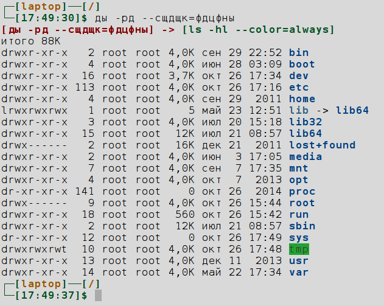

При работе в командной строке случается вводить команду в нелатинской
раскладке. После очередной такой ошибки возникла идея автоматической
коррекции символов. В bash можно переназначить функцию
command_not_found_handle, которая вызывается в случае
неправильного ввода команды. Введенный текст передается функции и доступен
через переменную первого аргумента – $1.
#Переназначение функции, вызываемой неизвестной командой
command_not_found_handle() {
echo $1 | grep '[фывапролджэйцукенгшщзхъячсмитьбю\
ЙЦУКЕНГШЩЗХЪФЫВАПРОЛДЖЭЯЧСМИТЬБЮ]' \
2>&1 > /dev/null
if [ $? == 0 ]; then
ex="$(echo -n $@ | \
sed "y/йцукенгшщзхъфывапролджэячсмитьбю
\.ЙЦУКЕНГШЩЗХЪФЫВАПРОЛДЖЭЯЧСМИТЬБЮ,
/qwertyuiop\[\]asdfghjkl;\'zxcvbnm,\.\/
QWERTYUIOP\{\}ASDFGHJKL:\"ZXCVBNM<>\?/")"
echo "[$@] -> [$ex]"
bash --rcfile ~/.bashrc -c "$ex"
else
echo >&2 "Команда не найдена."
fi
}
Функция ищет кириллические символы в команде и преобразует их в соответствующие латинские (для qwerty-раскладки).
Пример работы:
